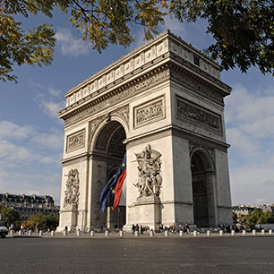
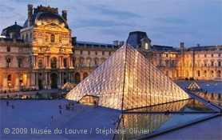
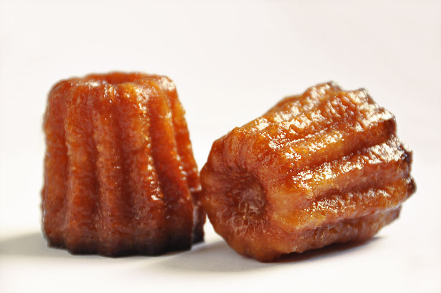

Présentation
La France est un pays d'Europe centrale situé entre l'Espagne, l'Allemagne, la Belgique, l'Italie, la Suisse et le Luxembourg. C'est la 5e puissance mondiale, le 2e pays ayant la plus grande zone économique exclusive martime en comptant toutes les zones outre mer que possèdent la France. C'est un pays plutôt rural et où le climat très différents suivant les endroits, mais où il y a de grandes villes magnifiques comme Paris (la capitale), Marseille, Toulouse (la ville rose), Biarritz.... C'est aussi un pays très riche culturellement, historiquement et gastronomiquement. Il y a aussi de nombreuses stations de ski dans les 6 chaines montagneuses que compte le pays. Des compétitions internationnales peuvent se dérouler dans ces zones montagneuses (Val d'Isère). Beaucoup de régions sont reconnaissables par leurs architectures et les spécialités gastronomiques (voir plus loin). On peut voyager au sein du même pays suivant les régions au travers de la musique, des plats, des danses, de l'architecture et des traditions.
Lieux à visiter
Lorsqu'on va en France, comment peut-on passer à côté de Paris, la capitale avec ses nombreux monuments célèbres comme la Tour Eiffel. La France a énormément de monuments à visiter !! En voici quelques uns:
- Tour Eiffel
- Situé dans le 7e arrondissement de Paris, c'est un des lieux les plus touristique et reconnaissable de la capitale. Construite en 1889 à l'occasion de l'exposition universelle de la même année. Cette tour mesure plus de 300m (314 pour être exact). Au premier étage se trouve une patinoire ouverte toute l'année mais qui attire plus de personnes l'hiver et l'automne. Au deuxième étage se trouve un des restaurant les plus luxueux de Paris : Le Jules Verne. Au troisième étage se trouve un poste d'observation interdit au public à cause des antennes radios et télé installées. C'est un des lieux les plus fréquentés toute l'année. En raison du plan VigiPirate, des fouilles sont effectuées avant d'y aller. Elle reste néanmoins un lieux incontournable de Paris et de la France. 
- L'Arc de Triomphe
- Situé dans le 9e arrondissement de Paris, il est connu pour la flamme du soldat inconnu qui brûle constemment dessous. Pour y accéder, il faut passer par un tunnel qui passe sous la route où il y beaucoup de circulation. Sa construction durera 30 ans (1806-1836), elle commencera sous Napoléon Ier (1804-1814) et se terminera sous Louis-Philippe, roi des Français (1830-1848). On raconte qu'après chaque victoire, l'armée française passait dessous l'Arc de Triomphe. Dans L'arche on peut voir de nombreux noms, il s'agit de soldats morts pendant de différentes batailles, le nom des batailles est situé au dessus des noms des soldats. Il mesure environ 50 mètres. 
- Le Louvre
- Situé dans le 1er arrondissement de Paris. C'est un musée d'art et d'antiquité. Avec ses 73 000 m², le Louvre est le plus grand musée d'art au monde. Avec plus de 60 000 m² de galerie, il abrite plus 550 000 oeuvres dont il en expose 35 000. Les oeuvres qu'il abrite sont très divers et variées : des sculptures, des peintures.... Il est situé pas très loin du jardin des Tuileries et de la Seine. Le musée se trouve en grande partie en sous sol. Sur la place juste en face de l'entrée du Louvre, on y trouve l'emblématique Pyramide du Louvre.
Gastronomie
Quand on parle de la France, on parle beaucoup de sa gastronomie. La gastronomie française est une des plus reputée du monde et en 2010, elle rentre à l'UNSCO sur la liste représentative du patrimoine culturel immatériel de l'Humanité. Voici donc quelques plats :
- Fondues Savoyarde/Bourguignonne
- La fondue savoyarde (voir image) un plat qui vient de Savoie, dans l'ouest de la France près de la Suisse. Les chaînes montagneuses en Savoie sont les Alpes. La fondue bourguignonne est quand à elle originaire de la Bourgogne (dans l'ouest de la France). La fondue est un plat servi principalement l'hiver. La fondue savoyarde est à base de fromage et de pain contrairement à la fondue bourguignonne qui est à base de viande que l'on cuit dans de l'eau bouillante. Ce sont des plats qui sont à déguster en famille.
- Crêpes/Galettes
- Deux plats pour un ! On les confond souvent mais ce n'est pas la même chose... Ce sont deux plats bretons, très appréciés partout en France et même partout dans le monde. La différence entre les crèpes et les galettes sont le goût et la préparation. La farine utilisée n'est pas la même : farine de froment pour les crèpes et farine de sarrasin pour les galettes. Les ingrédients utilisés sont presque les mêmes mais les propotions ne sont pas les mêmes. La pâte à galette est une pâte compacte mais qui garde une certaine fluidité alors que la pâte à crêpes est légère et fluide. Au niveau de l'épaisseur aussi c'est différent : la crèpe est plus fine que la galette généralement. Par contre les crêps peuvent être sucrées ou salées là où les galettes sont généralement salées. 
- Cannelés
- Petit gâteau à base de sucre et parfumé au rhum. Ils sont très appréciés et aussi très cher (2€ le cannelé). On donne l'origine de ce dessert à Bordeaux (dans le sud-ouest de la France) mais il est vite popularisé et est très demandé partout dans le monde.